- To move slides, use the arrow keys or swipe on your mobile device
- To see the speaker notes, press "s"
- To go to full screen, press "f"
- To print as PDF, go to this URL: ?print-pdf, then print.
- To get a PDF with speaker notes, add ?print-pdf&showNotes=true to the URL.
Star Formation and Mass Measurements in the Galaxy
- Postdoc: Allison Towner
- PhD: Desmond Jeff, Theo Richardson, Alyssa Bulatek, Nazar Budaiev, Savannah Gramze
- REU: Sydney Petz
- Undergrad: Derod Deal, Brice Tingle, Morgan Himes, Aden Dawson
Collaborators:
John Bally, Ashley Barnes, Cara Battersby,
Roberto Galván-Madrid,
Jonathan Henshaw, J. M. Diederik
Kruijssen, Steven Longmore, Xing Lu, Fanyi Meng, Elisabeth A.C.
Mills, Juergen Ott, Álvaro Sánchez-Monge,
Peter Schilke, Daniel Walker, Erik Rosolowsky, Eric Koch, Ciriaco
Goddi, Brett McGuire, Dick Plambeck, Melvyn
Wright, the ALMA-IMF team (Timea Csengeri, Fabien Louvet,
Nichol Cunningham, Frederique Motte, Patricio Sanhueza, and
many others)
Slides available at
https://keflavich.github.io/talks/colloquium_Mar2022_UMD.html
Summary
Most stars form in regions unlike the solar neighborhood
- Greater clustering, higher SF thresholds in denser clouds
- Steeper IMF in richer SF regions
We have, and are building more, tools to measure YSO masses & count YSOs
- ALMA-IMF core catalogs with high-resolution followup & modeling
- Hot cores track the earliest stage of HMSF
- Salt is a new tool to probe disks around high-mass stars
- CS masers may track YSO disks; they require rare conditions
Star formation drives the evolution of the universe
Star Formation oversimplified
Ṁ
The star formation rate, i.e., how much gas turns to stars
L / M
The light per unit mass, i.e., how stars and stellar populations turn matter into light
High-mass stars produce photons & heavy elements
low-mass stars live practically forever


Point color shows effective temperature, point size shows luminosity (left) and mass (right)
The stellar initial mass function (IMF)
Stars are randomly sampled from this distribution
Almost all of the light in star-forming galaxies is produced by high-mass stars
The stars form in and from gas
Most of what we know of star formation in detail comes from small local clouds
Most of what we know of star formation in detail comes from small local clouds
Cartoon of low-mass star formation

A molecular cloud fragments

The core forms a central protostar

The protostar heats its parent core and forms a disk
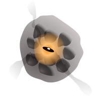It drives an outflow and consumes or blows out its core

Eventually, you end with just a star-disk system

Cartoon of low-mass star formation
Most of what we know of star formation in detail comes from small local clouds
They contain only low-mass stars and do not represent star formation in general
Most stars form in denser regions


FOV: 0.07 pc (16000 AU)
72 YSOs
one "hot core"
N*OMC(Otter+ 2021) = 1.6 x 105 pc-3
N*ONC(Otter+ 2021) = 0.6 x 105 pc-3
N*ONC(Hillenbrand+ 1998) = 0.2 x 105 pc-3

Most stars form in denser regions
NGC 1333, an embedded low-mass cluster
Lada & Lada 2003: >70% in embedded clusters
Most stars form in denser regions
NGC 3603 is a high-mass (104 M⊙) cluster
Lada & Lada 2003:
5-10% in bound clusters
in our Galaxy
5-10% in bound clusters
in our Galaxy
SSCs are common in starburst nuclei and drive galactic outflows
NGC 253 protoclusters (Leroy+2018)
NGC 4945 protoclusters (Emig+2020)
 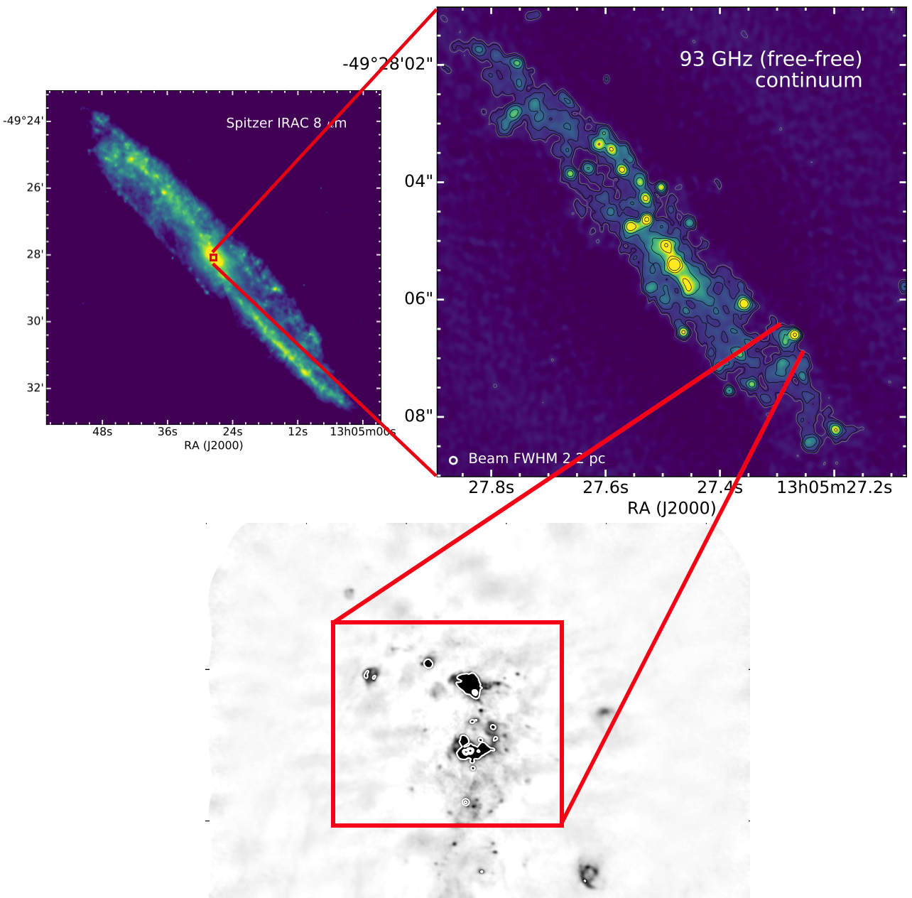
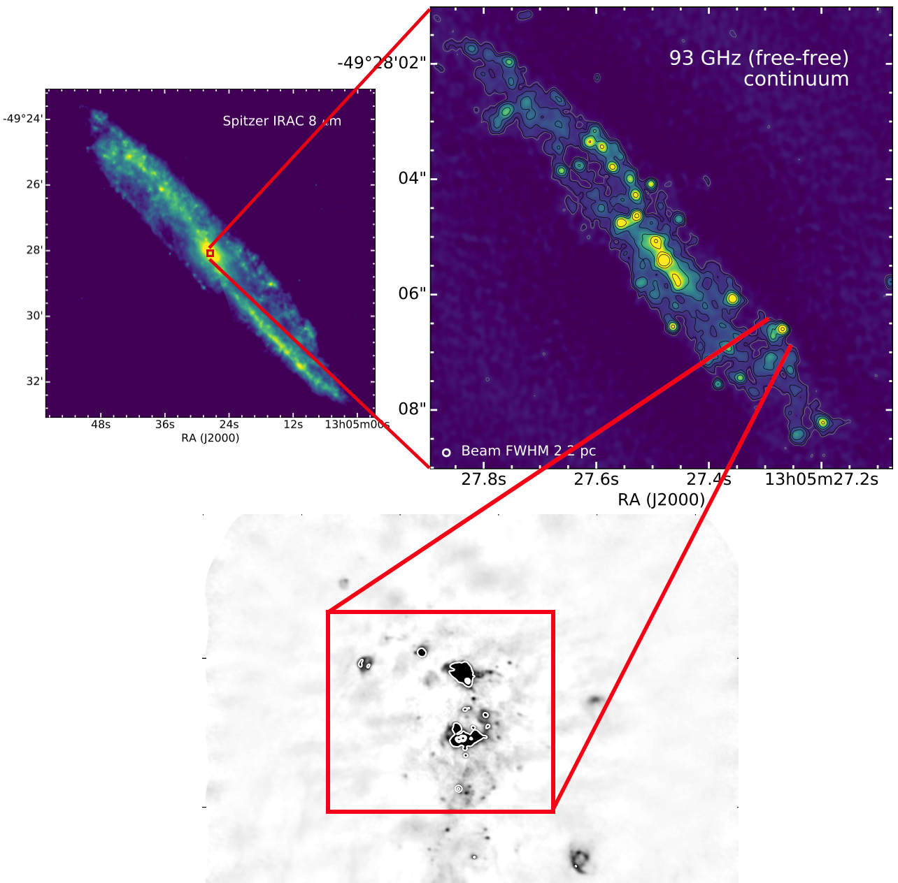

Star formation drives the evolution of the universe
Most stars in most galaxies formed long ago
Galaxies were smaller & denser back then
The "Bound Cluster Fraction" is higher in CMZs
Γ is the fraction of stars forming in bound clusters
Galaxy averages
CMZ prediction
Sgr B2 data
Sgr B2 data
The "Bound Cluster Fraction" was higher in the past
In denser (parts of) galaxies, more stars form in clusters
Γ is the fraction of stars forming in bound clusters
Galaxy averages
The "Bound Cluster Fraction" is predicted higher in the CMZ
Γ is the fraction of stars forming in bound clusters
Galaxy averages
CMZ prediction
The "Bound Cluster Fraction" is higher in the CMZ
Γ is the fraction of stars forming in bound clusters
Galaxy averages
CMZ prediction
Sgr B2 data
Sgr B2 data
Proto-cluster regions in our Galaxy sample conditions that were commonplace in the early universe
ALMA-IMF:
- 15 High-mass protoclusters probing young (few stars) to old (blowing out gas)
- Two ALMA bands looking at cold gas & dust
- Data published, analysis ongoing
ACES:
- The whole Galactic Center, with low-SF and high-SF clouds
- One ALMA band, biggest mosaic made.
- Data just starting to pour in
ALMA-IMF: CMF measurement & YSO counting
- Continuum data paper
(Ginsburg+ 2022, with big data reduction
team: Roberto Galvan-Madrid, Nichol Cunningham, Timea Csengeri,
Patricio Sanhueza, Fernando Olguin, Thomas Nony, Jordan Molet, Ana
Lopez, Yohan Pouteau, Andrez Guzman, Manuel Fernandez, Melisse
Bonfand)
- Self-calibration (10-500% dynamic range improvement), mosaicing, continuum selection
- Public mosaic self-calibration pipeline: https://github.com/ALMA-IMF/reduction/
- Survey overview (Motte+ 2022)
- Sample selection (evolutionary stages), highlights
- Shallow CMF in W43-MM2/3 (Pouteau+ 2022)
- CMF slope α ≲ 1
- Catalog paper in prep (Louvet+)
- ~1000 cores cataloged
- Line paper in prep (Cunningham+)
ALMA-IMF data highlights


ALMA-IMF: Continuum Data → core catalogs

Pouteau+ 2022: W43-MM2/3
ALMA-IMF:
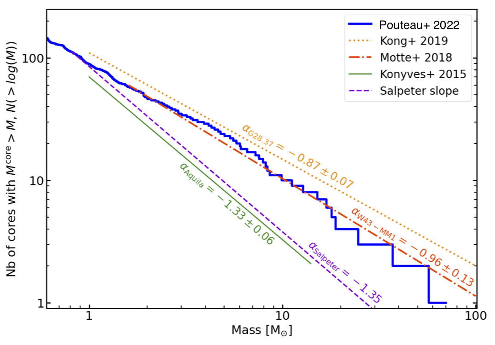
Top-heavier IMFs are seen in high-mass clusters,
ALMA-IMF:


 Theo Richardson
Theo Richardson


ALMA-IMF:
The CMF is shallow (top-heavy)
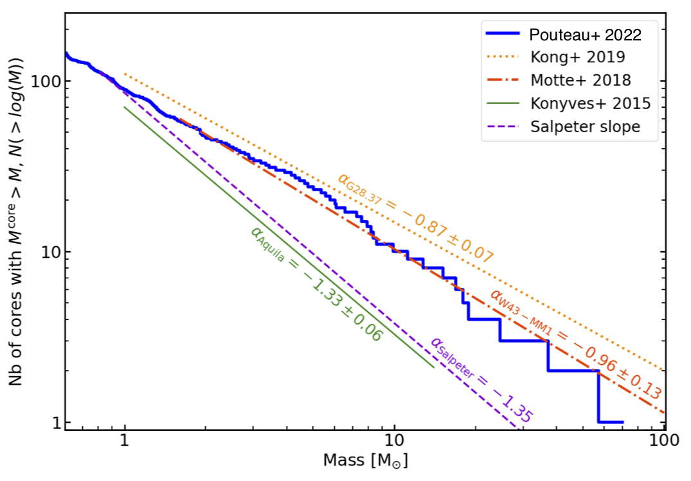
Pouteau+ 2022: W43-MM2/3 CMF
Motte+ 2018 W43-MM1 CMF: α≳-1
Motte+ 2018 W43-MM1 CMF: α≳-1
Top-heavier IMFs are seen in high-mass clusters,
CMFs in protoclusters

ALMA-IMF:
The CMF is shallow, and steepens with time?
Louvet+, in prep
Mass measurements: Optically thin, isothermal dust
TD estimated with PPMAP fits to Herschel data
Simple models assuming TD ~ M do not change CMF much
We can do better with YSO models and TG measurements
YSO modeling → luminosity functions
NSF 2008101: "How are stellar masses set?"
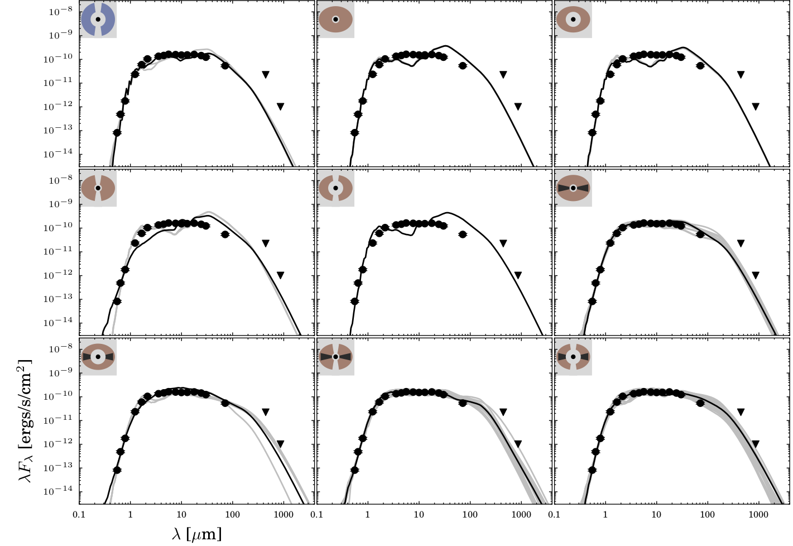
Theo Richardson
From YSO counts to the IMF?
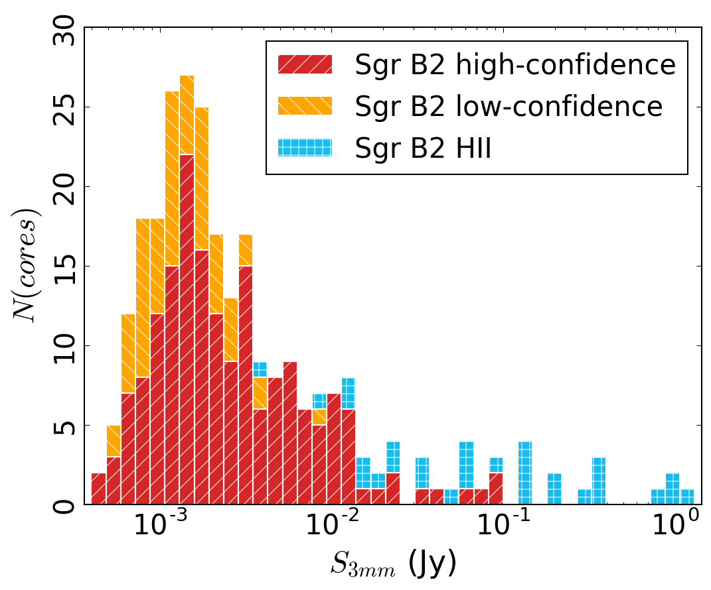

How do we measure the CMF if the cores all have YSOs in them?
Mapping accretion histories
(left: IS, right: TC)
onto the Robitaille 2017 model grid
(left: IS, right: TC)
onto the Robitaille 2017 model grid
SPICY-ALMA-IMF:

 Allison Towner
Allison Towner

Jeff+ in prep (CH3OH), Wyrowski+ in prep (CH3CN)


 Desmond Jeff:
Desmond Jeff:
Ten hot cores in Sgr B2 DS
TG ~ 200-500 K
M ~ 100 - 500 M⊙


Desmond Jeff:
Orion Source I


 Alyssa Bulatek: Physical Processes in the CMZ
Alyssa Bulatek: Physical Processes in the CMZ
Most stars form in regions unlike the solar neighborhood
We have, and are building more, tools to measure MYSO masses
Things I did not talk about today:
Salt backup slides
PASHION - backup


Classic HII region feedback:
The Jeans Mass MJ is the mass where gravity and thermal pressure are balanced.
MJ ∝ T3/2 ρ−1/2


Large scales again:

ALMA enables protostar counting in

Richardson-enhanced Robitaille+ 2017 model grid
fits including ALMA data
UG team:
Sydney Petz
Brice Tingle
Morgan Himes

{kind=link}
Line Data: SiO in ALMA-IMF
Allison Towner
Resolved, structured SiO outflows
5-60% of SiO at low-velocities:
Relic outflows?
Relic outflows?
Temperature measurements with per-pixel rotation diagrams
Jeff+ in prep (CH3OH), Wyrowski+ in prep (CH3CN)
Hot cores in ALMA-IMF: From rare objects to a population
Cores with line forests
TD>50 K
TG ≳100K
TD>50 K
TG ≳100K
Brouillet+, in prep
Hot core overview: A lot is coming
- 11 HCs in W43-MM1 (Brouillet+ in prep)
- ~60 HCs in ALMA-IMF sample from CH3OCHO (Bonfand+ in prep)
- CH3CN temperature maps (Wyrowski+ in prep)
Hot cores: Also in the Galactic center
Desmond Jeff:
Ten hot cores in Sgr B2 DS
TG ~ 200-500 K
M ~ 100 - 500 M⊙
The Central Molecular Zone of the Galaxy represents one extreme of star forming conditions in the Galaxy
PPVII review: Henshaw, Barnes, Battersby, Ginsburg, Sormani, Walker
The CMZ at 3mm
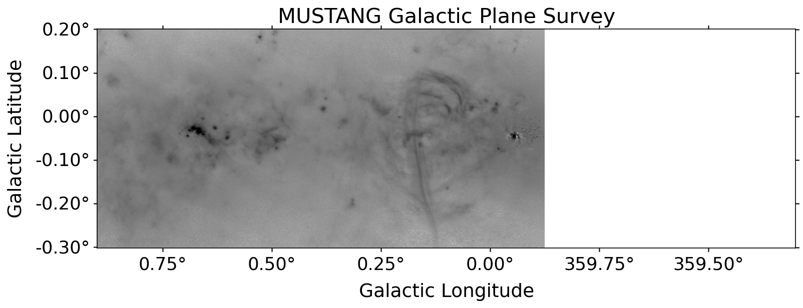
Ginsburg+ 2020
The CMZ at 3mm
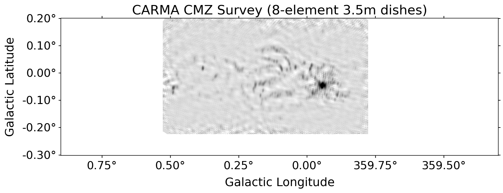
Pound & Yusef-Zadeh 2018
The CMZ at 3mm
Pound & Yusef-Zadeh 2018
The CMZ at 3mm
ACES team, in prep
The CMZ at 3mm
ACES team, in prep
A brief summary & progress report
- 3mm, 1.5", whole CMZ
- High spectral resolution (0.2 km/s) in HCO+ and HNCO
- Data products on their way! ~10% observed so far
- Several pilot programs demonstrating expected results
Our Galaxy's center, the CMZ, has denser gas than the Galactic average
Cold Dust
Hot, ionized gas
Hot dust/PAHs
Hot, ionized gas
Hot dust/PAHs
The proto-Super Star Cluster Sgr B2 is forming in the CMZ
The proto-Super Star Cluster Sgr B2 is forming in the CMZ
Simplistic mass inferences
At this sensitivity, all are M>8⊙ YSOs
Mtot = 8 M⊙
∫0∞ M N(M) dM
∫8∞ M N(M) dM
∫8∞ M N(M) dM
= 96 M ⊙
We can do better:
Long-baseline observations ID individual low-mass YSOs
69 → 350
Long-baseline observations ID individual low-mass YSOs
69 → 350
Nazar Budaiev: Low-mass YSOs in Sgr B2M
49 at 0.5" →
169 at 0.05"
49 at 0.5" →
169 at 0.05"
Nazar Budaiev: Low-mass YSOs in Sgr B2N
26 at 0.5" →
209 at 0.05"
26 at 0.5" →
209 at 0.05"
Sgr B2 N is rapidly accreting...
...and driving a powerful outflow
Schwörer+ 2021 (subm.)
Ṁ(out) =0.044 M⊙ yr -1
Jeff+, in prep
Jeff+, in prep
Jeff+, in prep
Sgr B2 DS: Unclustered SF in the CMZ
Desmond Jeff:
Now: Ten massive, hot cores in Sgr B2 DS
Soon: ~100 → ~400 pre/protostellar cores
How do we measure masses?
On the top end, mass measurement is difficult:
Dynamical mass measurements are the gold standard.
- cores are optically thick
- cores are confused & blended
- there is unresolved temperature structure
- the measured luminosity can be the sum of whole (proto)clusters
Dynamical mass measurements are the gold standard.
Sometimes, we can't measure dynamical masses
Salts in Orion
Orion Source I
a disk around a 15 M⊙ YSO
Salt: NaCl
Temperature?
Temperature?
A contrived model
Observing the Keplerian rotation profile of a disk is the most direct way to measure a protostar's mass
(we can only see the disk, not the star itself)
We can use salts to measure HMYSO masses
- NaCl, KCl are only in the disk, not the outflow (water traces both)
- NaCl is detected in at least two other HMYSOs
(Tanaka+ 2020, Maud+ in prep)
- Salts are observable with ALMA, the JVLA, and the future ngVLA
- Future projects will involve observing and modeling salt disks to measure HMYSO masses
W51 e2e: Too optically thick at 1mm to measure disk
CS v=0 J=1-0 and v=0 J=2-1 masers may trace the disk?
CS maser conditions
van der Walt+ 2020- Top: CS J=1-0, Bottom: CS J=2-1
- Red: Consistent w/W51e2e observations
- Masers do not coexist; require different specific CS column
(N2-1=1015.6, N1-01016.1 cm-2) - Require high abundance (XCS > 10-5)
- Hot (300-500 K), moderate-density (n~105 cm-3): Disk surface? Or outflow cavity wall?
Alyssa Bulatek: Physical Processes in the CMZ
- Broad line survey
- Multiline, spatially extended chemistry
Summary
Most stars form in regions unlike the solar neighborhood
- Greater clustering, higher SF thresholds in denser clouds
- ALMA-IMF will expand the sample to match or exceed local clouds
We have, and are building more, tools to measure MYSO masses
- Salt is a new tool to probe disks around high-mass stars
- CS masers may track YSO disks; they require rare conditions
- MUSTANG Galactic Plane Survey
- HCHII regions are ~1/3 as abundant as UCHII
- Feedback, YSOs in W51
- Massive (200-300 M⊙), hot (200-600K) cores suppress fragmentation
- Turbulence in Sgr B2 [WIP: student Madeline Hall]
- Gas temperatures in W51 [WIP: student Josh Machado]
Possible future uses for these lines?
- Metallicity measurement in deeply embedded star-forming environments? (at least of Na, K, Cl)
- Disk kinematics of high-mass stars, which are otherwise unobservable (τ>1 at mm wavelengths)
- Disk kinematic measurements at early stages?
- Probe dust destruction (and/or formation?) in outflows, disks?
- Probe radiation environment around HMYSOs?
Why do we see salt?
- Previously, NaCl & KCl only in AGB* atmospheres,
associated with dust formation - Most likely dust destruction here
Dust destruction happens immediately as the outflow is launched? - What about excitation? We see vibrationally excited lines, which are not seen in AGB*s
We do not have a viable model to explain these temperatures
A strong non-blackbody radiation field from 25-40 µm may explain them.
Forsterite (MgSiO4) has some emission bands in that range. Maybe?
Looking forward:
- PASHION: Paschen Alpha Survey of Hydrogen Ions
- JWST: Deep Paα, Brα, and broadband imaging
PASHION: Paschen Alpha survey of the Galaxy
Team:
- John Bally (CU)
- Elizabeth Lada, Steve Eikenberry (UF)
- Students: Alyssa Bulatek, Michael Fero, Nazar Budaiev
- Lockheed Martin (Alison Nordt, Gopal Vasudevan)
- Tony Hull (UNM)
- York Space Systems
PASHION: H2RG with Lockheed electronics, three narrow-band filters, 2.5" resolution, 25' FOV
A 24 cm dedicated survey telescope will be the most sensitive Galactic plane survey of ionized gas
These are fiducial numbers for a 1-year mission performing a 100 square degree blind survey. An extended mission may be possible.
PASHION, and JWST, recombination line science
Accretion onto YSOs

HII regions
Assuming typical AV~2 per kpc
How is star formation in high-mass clusters different?
- Feedback from one star affects many in clustered regions
- IMF depends on density, feedback, global conditions (e.g., Jones & Bate 2018, Narayanan & Dave 2012)
- Total star formation efficiency is higher.
- Collisions assemble the most massive stars?
(e.g., Fujii+ & PZ 2013, but see Moeckel & Clarke 2011)
Cartoon of high- and low-mass star formation
Main difference: massive stars affect their surroundings
Classic HII region feedback:
O-stars clear out their environment
{kind=link}
Accreting massive young stars affect their environment
Accreting massive young stars affect their environment
Accreting massive young stars affect their environment
The characteristic fragmentation scale
The Jeans Mass MJ is the mass where gravity and thermal pressure are balanced.
MJ ∝ T3/2 ρ−1/2
The characteristic fragmentation scale is larger
Jeans Mass
MJ ∝ T3/2 ρ−1/2
Feedback affects dense gas
ALMA + VLA + GBT together give multiple temperature probes on multiple scales.
High-mass protoclusters are filled with gas warmed by feedback.
Ginsburg+ 2017, Machado+ in prep
YSO disk counts in W51
The cartoon in the context of HMSF
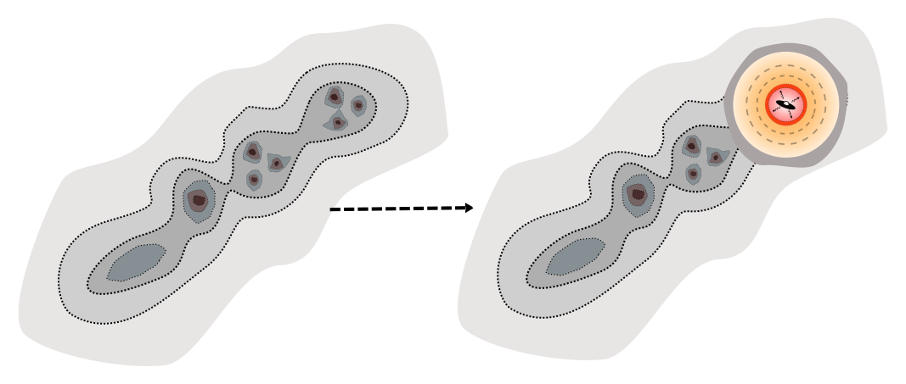
These high mass cores suppress low-mass star formation (LMSF) in their vicinity.
They reduce or prevent LMSF in the cores of stellar clusters.
More extreme: 'cooperative accretion'
With enough high-mass stars forming concurrently, massive stars may prevent fragmentation entirely.
If they still have enough gravity to bind the gas, the remaining gas is forced onto the most massive gravitational sinks.
If they still have enough gravity to bind the gas, the remaining gas is forced onto the most massive gravitational sinks.
Ammonia Masers
Large scales again:
What governs the star formation rate?
Turbulent ISM models
Turbulent ISM models
Turbulent ISM models
Measuring Line Profiles
SCOUSE uses pyspeckit for manual fits. Gausspy+ is machine-learning trained. We're exploring more automated approaches. ALMA enables protostar counting in
distant, massive clouds
Sgr B2: the most massive & star-forming cloud in the Galaxy
How do we learn about clustering? The IMF?
- Count objects:
- Cores are (sometimes) countable
- Protostars are countable
YSO counts let us investigate thresholds
Local cloud studies support the idea of a gas density threshold for star formation
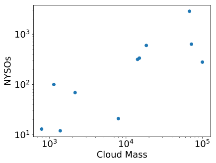 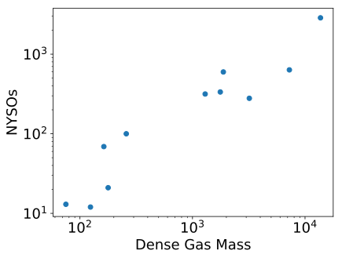
Thresholds are used in simulations to say
"if gas reaches this density, turn it into stars"
"if gas reaches this density, turn it into stars"
Compare YSO counts in Sgr B2 and the CMC
Is there a threshold?
Is there a threshold?
A threshold separates Sgr B2 from The Brick
Jeff+, in prep
Walker+ 2021
3mm Luminosity Function
What are the sources?
At this sensitivity, all are M>8⊙ YSOs